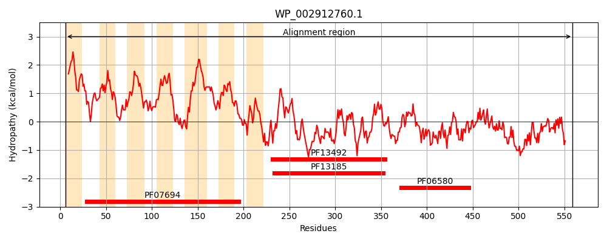
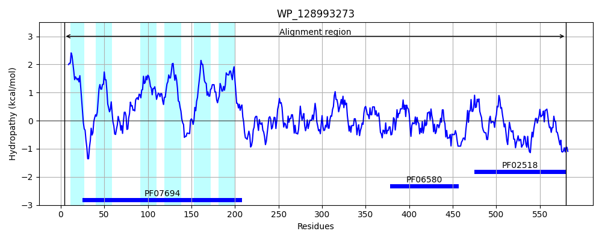
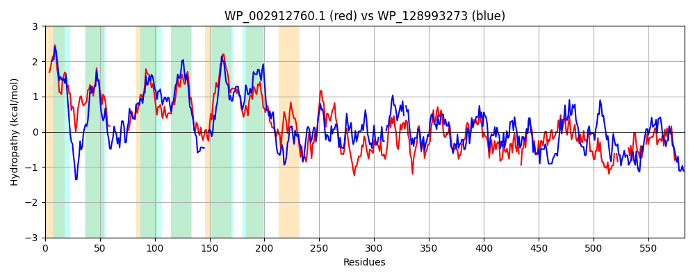

Hit Accession: WP_128993273
Hit TCID: 9.B.33.1.4
Hit Description: gnl|BL_ORD_ID|21843 gnl|TC-DB|WP_128993273.1|9.B.33.1.4 two-component system sensor histidine kinase LytS [Bacillus subtilis]
Mach Len: 583
e:0.000000
Query TMS Count : 7
Hit TMS Count: 6
TMS-Overlap Score: 3.100000
Predicted Substrates:None
BLAST Alignment:
Score: 873 , Bit scores: 340 bits, E-value: 3.7e-110, Alignment length: 583, Percentage identity: 34
Query: 6 LVLLLLQQMCVFLVIAWLMSKTRLFIPLMQVTVRLPHKLLCYVTFSIFCIMGTYFGLHIE----------------DSIANTRAIGAVMGGLLGGPVVGGLVGLTGGLHRYSLGGMTALSCMVSTIVEGLLGGLVHSVLVKRGRPDKVFSPLTAGAITFVAELVQMMIILLIARPFQDALHLVQSIAAPMMVTNTVGAALFMRILLDKRAMFEKYTSAFSATALKVAASTEGILRQGFNEENSMKVAQVLIQELDIGAVAITDRDKLLAFTGIGDDHHLPGKPISSSYTQRAIETGEVVYADGNEVPYRCSIHPHCKLGSTLVIPLRGENQRVIGTIKLYEAKNRLFSSINRTLGEGIAQLLSAQILAGQYERQKALLTQSEIKLLHAQVNPHFLFNALNTLKAVIRRDSDQAGQLVQYLSTFFRKNLKRPTE-IVTLADEIEHVNAYLQIEKARFQANLQIQMAVPEGLAHHQLPAFTLQPIVENAIKHGTSQHLGVGEITIRASQDDRWLQLDIEDNA-GL---------YRANPQASGLGMNL--VDRRLRARFGADCGISVTCEPERFTRVTLRLPLEE 559
L++++L+++ + +++ ++++ T+LF +Q K + FS+F I+ Y G+ I+ SIANTR +G +GGLLGGP VG +G+ GLHR+SLGG TALSC VS+I+ G+L GL+ KR R +P A + E +QM+IILL+A+PF DA LV I PM++ N G+ +F+ I+ E+ + + L +A T RQG NE + VA ++ + AV++TD++K+LA G G DHH+P K + + +++ I+TG ++ A E C +H C L + +V+PL N IGT+K+Y S + L EG+A L S Q+ G+ E Q LL +EIK L AQVNPHFLFNA+NT+ A+ R D ++ +L+ LS +FR NL+ + ++ L+ E+ H+NAYL +E+ARF +I++ + L ++P F LQ +VENA++H + + ++T+ DD + + + DN G+ + P G G L +++RL FG + ++ E + T V+ ++P+++
Sbjct: 4 LMIMMLERVGIIVILGFILAHTKLFRQALQNQDGYKGKAILISIFSLFSIISNYTGIEIQRNMIVNNDWVFTIDPSGSIANTRILGVEIGGLLGGPFVGAGIGILAGLHRFSLGGSTALSCAVSSILAGVLAGLIGRYFTKRYRMP---TPRIAALVGIGMESLQMIIILLMAKPFSDAWELVSMIGIPMILINGTGSFIFLSIIQAIIRKEEQARALETHRVLTIADQTLPFFRQGLNENSCKSVAAIIHKLTGTDAVSLTDKEKILAHVGAGMDHHIPSKSLITGLSKKVIKTGHIMKAISQE-EIEC-MHAECPLHAAIVLPLTS-NGNTIGTLKMYFKSPAGLSQVEEELAEGLAMLFSTQLELGEAELQSKLLKDAEIKALQAQVNPHFLFNAINTISALCRTDVEKTRKLLLQLSVYFRSNLQGARQLLIPLSKELNHLNAYLSLEQARFPGKYKIELNIDSRLEQIEIPPFVLQVLVENALRHAFPKKQDMCKVTVCVLSDDASVYMKVTDNGRGIPPDVLPELGKKPFPSKEGTGTALYNLNQRLIGLFGQQAALHISSEVHKGTEVSFQVPMQQ 580 | Protein Hydropathy Plots: |
|---|
|  |  |
Pairwise Alignment-Hydropathy Plot:
|
|---|
|  |